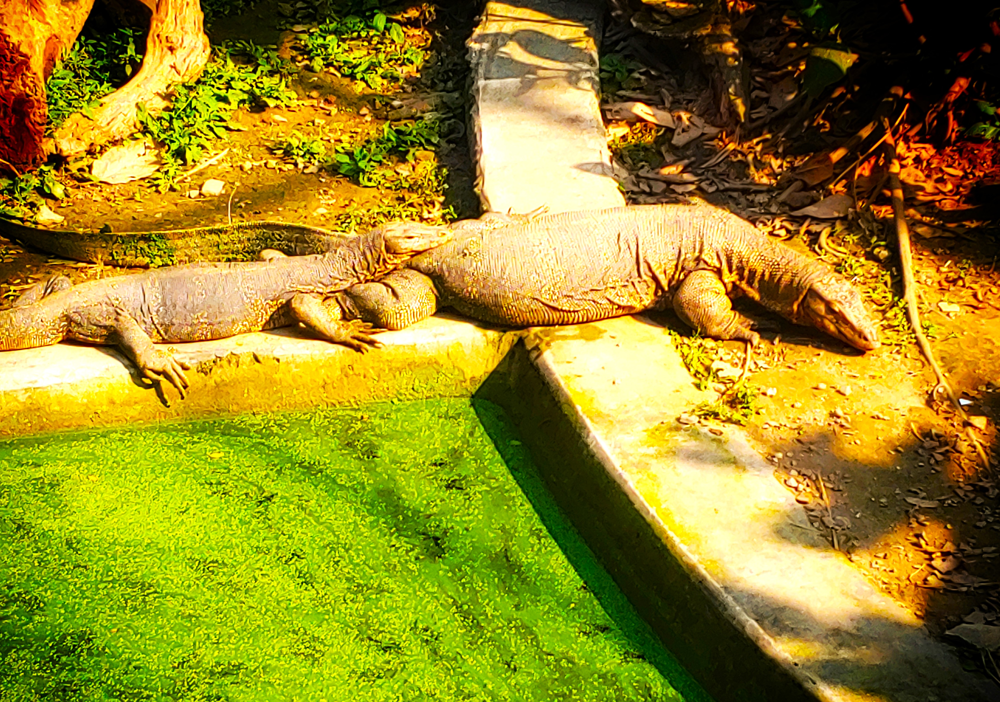
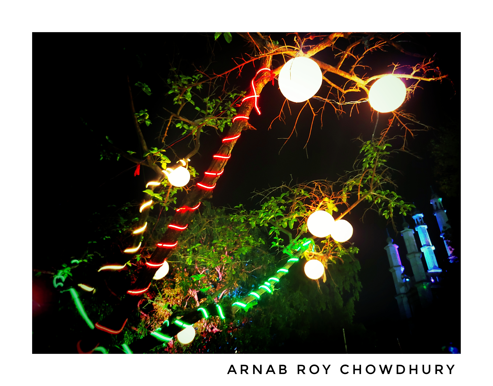
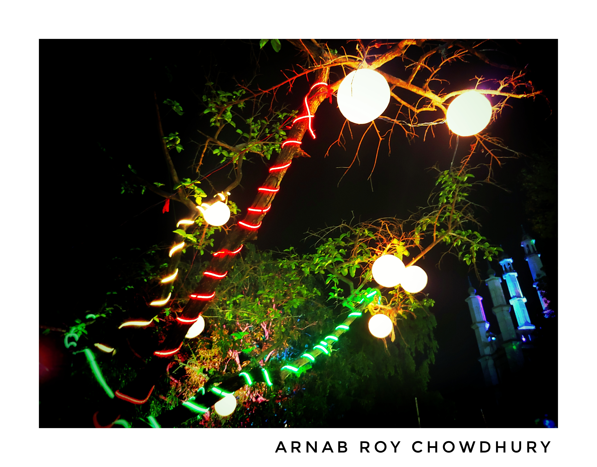

Nature Photography

Mount Everest
Mount Everest is Earth's highest mountain above sea level,
located in the Mahalangur Himal sub-range of
the Himalayas

Alipur Zoo
The Zoological Garden, Alipore is India's oldest formally
stated zoological park and a big tourist attraction
in Kolkata, West Bengal.

 
